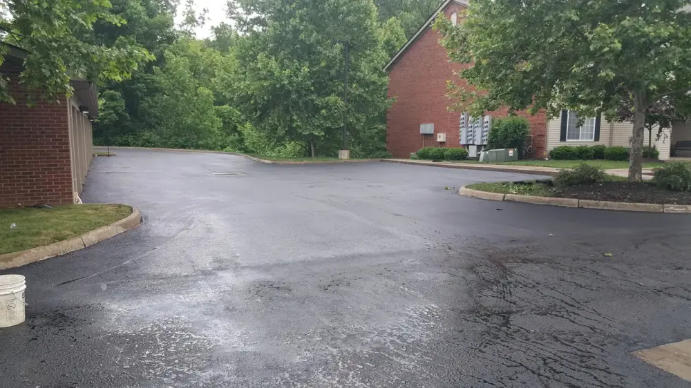
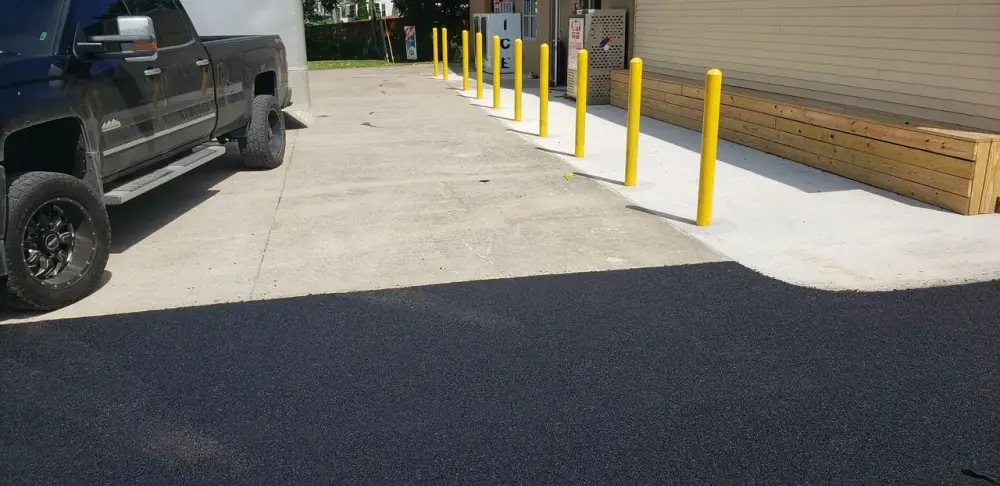

Newark Paving Contractor
Asphalt paving and concrete for Newark and Licking County homes and businesses.
Your Newark Paving & Concrete Team
Neff Paving is a family-owned, ODOT Certified contractor serving Newark and the surrounding Licking County area. From driveways to parking lots, our crews bring the same materials, equipment, and standards to every Newark project — backed by 40+ years in construction.
Asphalt & Concrete Services

Asphalt
- Parking Lots
- Roads
- Driveways
- Maintenance

Concrete
- Flatwork
- Sidewalks
- Curbs
- Commercial & Residential
Why Newark Chooses Neff
ODOT Certified
Qualified through the Ohio Department of Transportation, fully insured and bonded, and HSE Certified.
Family Owned Since 1999
Started by the Berkfield and Neff families and still family owned and operated, with 40+ years in construction.
Honesty & Quality
Dedicated estimators, premium materials, and a final walkthrough on every project — residential or commercial.
Around Newark
Proudly serving Newark and nearby communities across Licking County and beyond.
Common Questions from Newark Homeowners & Businesses
Does Neff Paving serve Newark, Ohio?
Yes. Neff Paving serves Newark and all of Licking County, including Heath, Granville, Hebron, Buckeye Lake, Pataskala, Johnstown, and Utica. Our crews dispatch from our Zanesville base a short drive away, so Newark work is close to home.
How much does it cost to pave a driveway in Newark, OH?
Every Newark driveway is priced after a free on-site estimate. Cost depends on square footage, the condition of the base, drainage, and whether it is a new install or a resurface. Call (740) 453-3063 or request an estimate online and we will measure the job and give you a firm, itemized price with no pressure.
When is the best time of year to pave in Newark?
Hot-mix asphalt lays and compacts best when ground and air temperatures stay above roughly 50°F, so late spring through early fall is ideal in Licking County. We schedule Newark projects around Ohio's freeze-thaw cycle and can book early to hold your spot for the paving season.
Are you licensed and insured to work in Newark?
Yes. Neff Paving is ODOT Certified, fully insured and bonded, and HSE Certified. We have been family-owned and operated since 1999 with 40+ years in construction, and we bring the same materials, equipment, and standards to every Newark residential and commercial job.
Paving or concrete in Newark?
Call (740) 453-3063 or request a free estimate online. Serving Newark and all of Licking County.